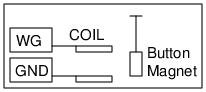

Schematic

Instructions
- Make a pendulum using a folded piece of paper and two button magnets.
- Connect the coil from WG to Ground and place the pendulum in front of it.
- Adjust the frequency of WG to find out the resonsnce frequency of the pendulum.
- The amplitude becomes very large at this frequency.